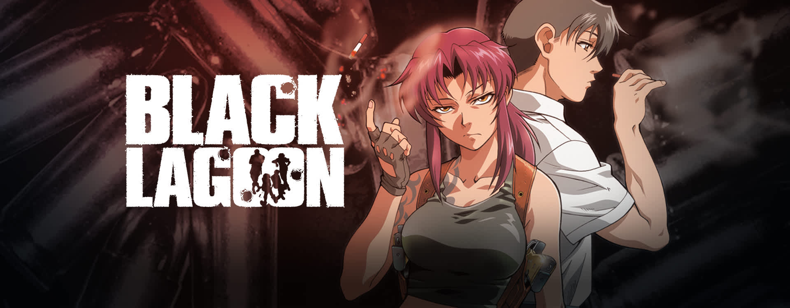
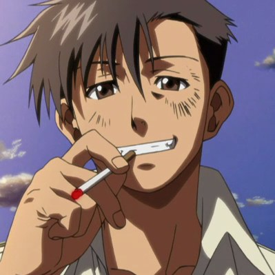
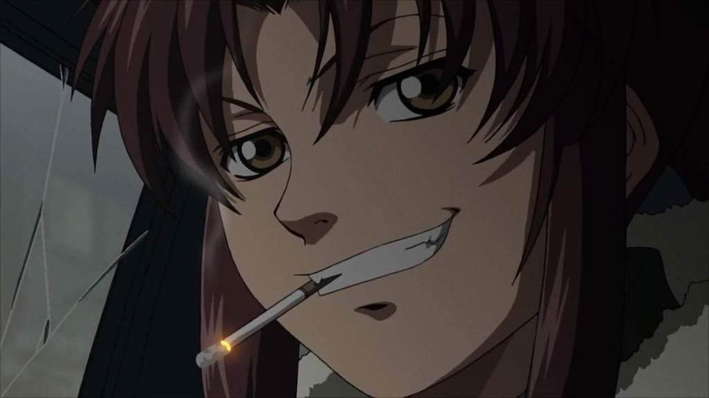
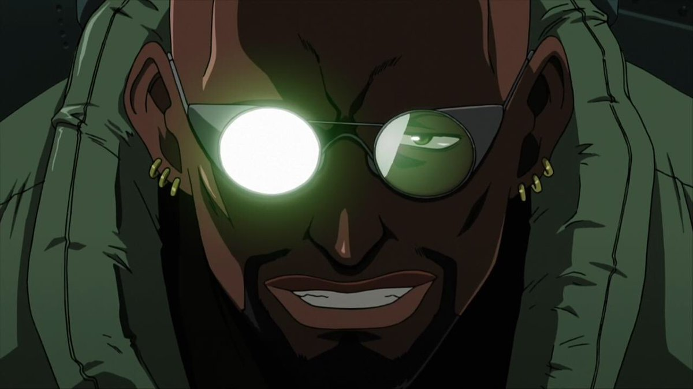
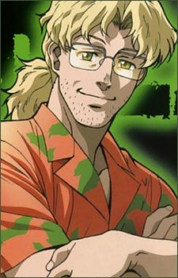

Black lagoon
Fecha de estreno: 8 de abril de 2006
Creador: Gen Urobuchi
Estudio de animación: madhouse
Editorial: Shogakukan
Capítulos: 24 (sumando su segunda temporada)
Géneros: acción, thriller, aventura
Director: Sunao Katabuchi
Licenciado en: España, Francia y EE.UU
segunda temporada: Black lagoon: second barrage
Úlima emisión: 18 de diciembre de 2006
Sinopsis
Rokuro Okajima es un empleado en una normal empresa de Tokio hasta que es secuestrado por unos piratas que viven escapando de la ley. En contacto con sus jefes le desprecian y acaban dándolo por muertos con el propósito de no dañar la reputación de la empresa llevando a ningún lazo con la ilegalidad. Desde ese entonces, Rokuro pasa a llamarse "Rock", apodo que toma de sus captores aunque ahora compañeros de trabajo, fuera de toda sociedad con ley, vivirá las grandes aventuras de su nueva empresa "black lagoon".
Personajes principales
-Rokuro Okajima: o Rock es un hombre alto, moreno y sin destacar en su forma física o rasgos. En el momento en el que le dieron por muerto en su antigua empresa, sintió quitarse un peso de encima. Como él lo describe, ya no tenía que ir detrás de sus jefes dándoles la razón y agacharse sin más. En black lagoon, los considera a todos unos buenos compañeros, pero por la experiencia que le lleva y le avisan, no saca lazos muy fuertes con ellos.
Spoiler
Más tarde madura sobre el echo de lo que hace, robar, saquear y matar. La vida de un delincuente del que no toma ninguna pistola pese a encontrarse en un lugar donde sino la llevas es que no eres muy inteligente.
-Revy: una joven y famosa pistolera perteneciente a la compañía de black lagoon junto a Rock y los demás integrantes.
-Dutch: el capitán y líder de la compañía de black lagoon. Un hombre alto, negro, calvo y muy fuerte a la vez que presenta un gran conocimiento sobre la delincuencia y la ilegalidad.
-Benny: el genio en la informática y elecrtónica del equipo. Pese a su aspecto de poco criminal es un importante miembro de la compañía al que, al igual que Rock, no aporta un arma y no se ve con la capacidad de utilizarla.
Opinión de la obra
Black lagoon es especialmente conocida por su imensa acción y trama thriller de delincuencia. Bajo mi no gran conocimiento de la obra, pese a no ser la mejor dirigida tiene unos puntos que hace gustar a la gente.
Historia
La historia de black lagoon es muy entretenida, ya sea algo vista y un poco explotada su temática, sinceramente y en lo personal ha sabido tratar muy bien su argumento y para manejarla de tal manera que sea interesante ver las aventuras de sus personajes principales.
Personajes
Los personajes son el que yo considero el punto fuerte de toda la obra. Unos criminales que se miden con sus palabras y su vulgar lenguaje con un toque de comedia con chistes negros y serios en situaciones específicas. Un carisma único en cada uno y sus personalidades es lo que nos hace encajar con ellos haciendo quererlos, a la vez que muestran la madurez y lo que conlleva vivir de la delincuencia.
Animación y dibujo
La animación es bastante normal y básica, ya que tanto la época en la que se hizo como el director no tenía experiencia en obras con tanta acción a adaptar. No es la mejor animación ni mucho menos pero es bastante decente y no se sale en absoluto de una mala adaptación. En cuanto al dibujo con el uso de colores más llamativos y oscuros fue una buena decisión para ponernos en la situación de los barrios bajos de la sociedad.
Final
Esta obra al ser una que sigue el prototipo de mini-historias se cuestiona que tenga un final pues son arcos que empiezan y acaban con personajes que no volvamos a ver a menos que se haga guiño o mención de ellos. Mientras, ni el manga tiene un final así que no se le puede decir ni echar nada en cara.
Recomendación
Es bastante recomendable si es que ya tiene experiencia con este tipo de historias y si los gustos son llevados a los thrillers con delincuencia y sin nada de censura en la obra.
Contact Me
Cartagena, España
Tf: +34 612345
Email: belshu13@gmail.com